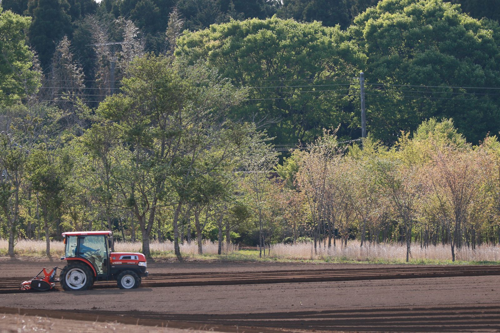
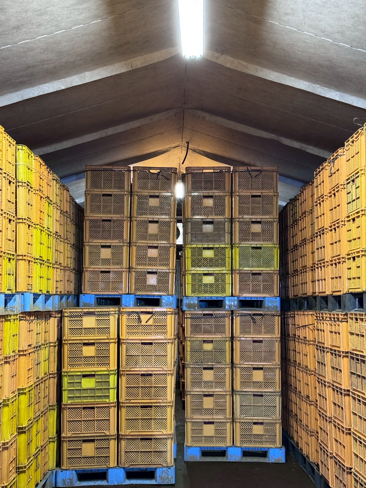
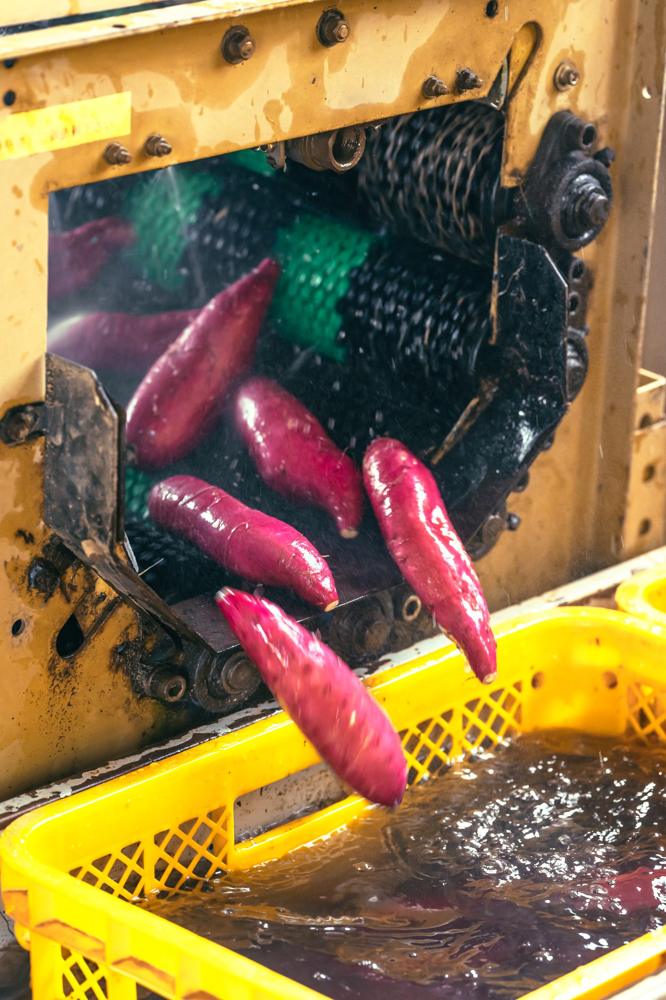
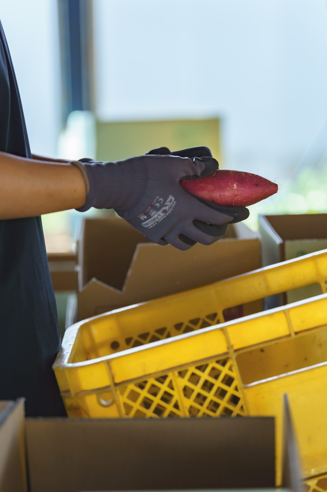

こんなこだわりでつくっています
千葉県香取市で80年続くさつまいも認定農家。専用貯蔵庫で温度・湿度を24時間管理し、甘みがじっくり増すまで熟成させてお届けします。
べにはるか
ねっとり濃厚、あふれる蜜。
薄皮で蜜だくな濃厚な甘さ。最低3ヶ月貯蔵して糖度を高めた、焼き芋にぴったりの一本です。
シルクスイート
新芋と熟成芋、上品でやさしい甘さ。
名前のとおり絹のようになめらかな食感が特徴。夏はしっとり新芋。秋はしっとり熟成芋。２つの楽しみ方できます。
畑から手元に届くまでを、のぞいてみる

土づくりから始まるさつまいも
収穫が終わったら、すぐに土を耕し、次のさつまいも作りの土台を準備します。化学肥料だけでなく、有機肥料を独自配合。農薬は基準値内の最低限にしています。

苗を植える
香取市の畑に、苗をハウス内で育て、ひと畝ずつ丁寧に苗を植えます。マルチで土の温度と湿度を整え、じっくり育てる準備をします。

貯蔵庫で熟成
収穫したさつまいもは専用の貯蔵庫へ。温度・湿度を24時間管理しながらじっくり寝かせ、でんぷんが糖に変わり、甘みが最大限に増すまで熟成させます。

1本ずつ洗浄
貯蔵庫から出したさつまいもは、形を整え、1本ずつ機械洗浄していきます。真冬でも地下水を使用しているため、痛みや弱りが出にくいです。

すべて手作業で1本ずつ選別
サイズ・形・傷の有無などを一本一本丁寧に選別し、箱詰めを行っています。農協規格に基づいた選別を行っているため、贈答用や焼き芋用としては品質やサイズの揃った厳しい基準のさつまいもをお届けしています。

出荷する
FARM YASHIROのロゴが入った箱に詰めて出荷。ご家庭向けの注文から焼き芋店様向けの卸ロットまで対応します。
プロの審査員からも高く評価
産地や品種、生産者の情報を伏せたブラインド審査で、その味わいが評価されました。

ファーマーズ・オブ・ザ・イヤー 2025-26
日本さつまいもサミットにて、その年最も優れた生産者として表彰されました。
授賞式では、べにはるか生みの親でもある山川 理氏より、独自の肥料設計による栽培や収量などを講評いただきました。
最高金賞（シルクスイート）
第2回全国焼き芋（サツマイモ）選手権 サツマイモ部門にて最高金賞。
銀賞（べにはるか）
野菜ソムリエサミットにて、べにはるかが銀賞を受賞。
銅賞（べにはるか）
第2回全国焼き芋（サツマイモ）選手権 サツマイモ部門にて、べにはるかが銅賞を受賞。
お客様から届いた高評価の声
綺麗な見た目だけじゃなく、甘くて美味しい。ビックリしました。
形が揃っていて、調度良い甘さとねっとり具合だった点。
サツマイモがとても綺麗で焼き芋にしてからもとても甘みがあり美味しくスムージーにしても甘味料を使わなくても美味しく頂けました♪
焼きたてもですが冷やした時のねっとり感と甘さが格別に美味しいと感じました！皮が薄くて繊維も少ないので端まで皮ごと食べられました。
まず皮がツヤツヤして綺麗。焼き芋にちょうど良いサイズで、シルクスイートの蜜がたっぷり！
形も綺麗で、甘さもしっかりありおやつにぴったりです。スイーツを作る際にはお砂糖をほとんど使わなくてもいいので身体にも良いです
熟成されているシルクスイートは甘くてとても美味しかったです
形も良く、サツマイモ本来の風味を残しつつ甘さも増しています。最近のトロトロ過ぎにならないところも好みです
品質が高いのはもちろんのこと、形が揃っていて品質が安定している点がとても素晴らしいと思いました。サツマイモの腐りもなく、良い状態で保管されているのだと思いました。
すっと溶けるような舌ざわり、いもの甘さも最高。２つに割ったときの、お芋の色。皮の薄さ→非常に食べやすかった
甘さもですが、肉質がとても良い
味が好きです。食感もよく、紅はるかも筋が少なくて食べやすい。とにかく、甘くて、お客様の反応もとても良いです。
購入者アンケートでも、高い評価
焼き芋など加工品を販売されている方、普段から焼き芋を購入している方に、当農園のさつまいもを召し上がっての評価をうかがいました。
※ N=112／焼き芋など加工品を販売する方・日常的に焼き芋を購入する方への自社アンケート
ご家庭でも、お店でも。お届けします
ご自宅用・贈答用はオンラインストアから。焼き芋専門店様向けの卸も承っています。